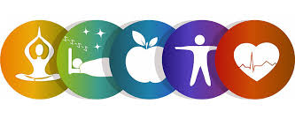
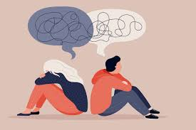

Cómo cuidar tu salud mental
Guía Completa para Cuidar tu Salud Mental
Estrategias prácticas para mantener y mejorar tu bienestar emocional

- Autocuidado físico
- Dormir suficiente para tener mas energia minimo 8 horas
- Alimentarse bien con frutas y verduras
- Hacer ejercicio minimo 30 min. diariamente
- Gestión emocional
- Reconocer sentimientos para aprender de ellos
- Practicar relajación mediante meditaciones o alguna actividad de interes
- Pedir ayuda y saber identificar cuando necesitamos ayuda
- Vida social
- Hablar con amigos, familiares, y conocer gente nueva
- Participar en actividades culturales de tu agrado
- Evitar aislamiento de amigos, familiares, etc.
- Hábitos saludables
- Establecer rutinas para tu dia a dia
- Tomar descansos por lo menos durante tus actividades para tener un tiempo para ti
- Limitar pantallas y establecer horario de uso

Consejos Detallados para el Autocuidado Mental
- Rutinas saludables
- Establece horarios consistentes
- Levántate y acuéstate a la misma hora para tener un mejor ciclo de sueño
- Planifica momentos para comidas, trabajo y tiempos libres
- Crea rituales matutinos y nocturnos
- Meditación o estiramientos al despertar
- Reflexión acerca de tu dia o lectura antes de dormir
- Alimentación consciente
- Consume alimentos beneficiosos para el cerebro, frutas y verduras, azucares,etc. hay que recordar que ningun alimento es malo si se consume en cantidades moderadas
- Omega-3 (pescados, nueces, semillas)
- Antioxidantes (frutos rojos, verduras de hoja verde)
- Probióticos (yogur, kéfir, alimentos fermentados)
- Evita excesos perjudiciales
- Reduce cafeína después del mediodía para tener un buen control y equilibrio
- Limita alcohol y tabaco pues pueden dañar altamente tu salud
- Modera el consumo de azúcares refinados se pueden consumir pero en cantidades menores
- Ejercicio físico integral
- Actividades aeróbicas (SALTAR LA CUERDA, DANZA, FUTBOL, CAMINAR- TROTAR, ETC)
- Caminata rápida 30 minutos al día para despejar la mente y reflexionar
- Natación o ciclismo 2-3 veces por semana (alguna actividad que realmente te interese)
- Prácticas mente-cuerpo
- Yoga para reducir ansiedad, meditacion o terapia
- Tai Chi para mejorar concentración
- Pilates para conectar con tu cuerpo o natacion

- Gestión emocional
- Técnicas de regulación emocional
- Identifica y nombra tus emociones
- Practica la pausa antes de reaccionar, es importante pensar antes de actuar
- Usa el diario emocional para procesar sentimientos, identificarlos y mejorar cada dia
- Desarrolla resiliencia
- Reencuadra pensamientos negativos
- Practica la auto-compasión, para mejorar la relacion contigo mismo
- Acepta lo que no puedes cambiar, no todo esta siempre en nuestro control
- Vida social equilibrada
- Relaciones significativas
- Programa tiempo de calidad con seres queridos, es importante para un buen desarrollo
- Expresa aprecio y afecto regularmente a quienes tu consideres
- Establece límites en relaciones tóxicas, pueden dañar tu salud metal, es de suma importancia aprender a poner limites
- Participación comunitaria
- Únete a grupos con intereses similares, a talleres o actividades culturales
- Participa en actividades de voluntariado para personas que no conozcas (conocer gente nueva)
- Asiste a eventos culturales o educativos
- Manejo del estrés avanzado
- Técnicas de relajación profunda
- Respiración diafragmática (4-7-8), repetir constantemente para lograr un estado de equilibrio y relajacion
- Relajación muscular progresiva
- Visualización guiada para dar lugar a nuevos objetivos
- Mindfulness y conciencia plena
- Meditación diaria (inicia con 5 minutos)
- Alimentación consciente, es muy importante mantenernos nutridos y no saltarnos comidas
- Escucha activa sin juicios para tener un juicio y aprender a escuchar
- Crecimiento personal
- Desarrollo de habilidades
- Aprende algo nuevo cada dia puedes desarrolar nuevos conocimiemntos durante meses diariamente
- Practica hobbies creativos y de tu agrado
- Desafía tu zona de confort gradualmente haz algo que siempre haz querido hacer
- Propósito y significado
- Define tus valores personales
- Establece metas realistas a corto y largo plazo
- Reflexiona sobre tu contribución al mundo, establece un plan de vida y nuevas metas
- Entorno saludable
- Espacios físicos
- Organiza y decora tu espacio vital para mayor comodidad y un mejor estdo de animo
- Incorpora plantas y luz natural para darle vida al espacio y sentirte mucho mejor en tu ambiente
- Crea un rincón de tranquilidad y manten todo ordenado
- Entorno digital
- Desintoxica tus redes sociales o desinstala ñlas que no te aportan nada bueno
- Establece horarios sin pantallas diariamente
- Curate fuentes de información positivas e investiga
- Recursos profesionales

- Cuándo buscar ayuda
- Cuando los síntomas persisten más de 2 semanas
- Si afecta tu funcionamiento diario
- Ante pensamientos de autolesión
- Opciones de tratamiento
- Terapia cognitivo-conductual
- Grupos de apoyo con personas de las cuales puedad aprender
- Orientación psicológica en línea o presencial segun tu preferencia y comodidad
- Evaluación psiquiátrica cuando sea necesario
ir al inicio